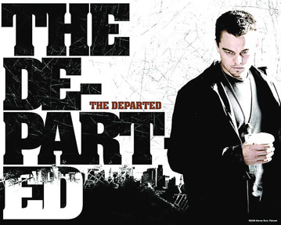

美国版《无间道》--The Departed @ Dec 19, 2006

昨天晚上看了美国版的《The Departed》，比港产的烂。剧情不紧凑之外，还有印象先入为主的原因，总是不自觉地拿它和港产的《无间道》比较。《The Departed》改编自刘伟强、麦兆辉导演的港片《无间道》，故事大纲与原作相似，根据寰亚和华纳的合约规定，除了支付1750万美元的版权费用外，寰亚将拥有该片在内地和港台地区的永久版权，所以这部电影的字幕也会标明寰亚是该片的出品方之一，只是结尾略有不同，并且警察内部知晓卧底身份的不是一个而是两个人，只是活着的那个知情者却在需要的时候没出现，最后等Billy Costigan被杀后才出来一枪解决了在警察卧底的Colin Sullivan，有点牵强。
Leonardo DiCaprio饰演的Billy Costigan我觉得还是很精彩的，现在的他体型比过去要魁梧一些，不再是那种油头粉面的奶油小生形象，表演成熟多了。Matt Damon的表演也不逊色，比起刘德华我更喜欢Matt Damon的表演，刘德华一直给我的印象是表演痕迹太重。
5 Responses to “美国版《无间道》--The Departed”
2006-12-20
Hmm…I thought the movie was very well done. The story’s been changed to better suit the American taste, as seen in its smart and snappy dialogue which most Americans appreciate. I didn’t like the original HK version quite as much mostly because it’s a little too slick and b/c of Andy Lau.
2006-12-22
当时看完了美版无间道我就觉得美国人拍的太不严肃了，呵呵。事实上，虽然两个主演都是知名演员(Matt更是才子，拿过奥斯卡最佳原创剧本奖)，可是比起梁朝伟、黄秋生这些老戏骨来说，表演上还是稚嫩了些。看过几部美国改编的电影(如Taxi)，比起原创来均逊色不少。其实并不是只有snappy的电影才会被美国人受落(至于楼上说的smart就更谈不上了，如果说港版无间道的对白是sophisticated的话，美版的对白只能算是shallow而远非smart)，譬如Once upon a time in America,虽然是一部很严肃的黑帮片(个人觉得比教父系列更反映人性、更现代些)且当时票房不好，但是多年后却仍然是拾回了应有的尊重。虽然The departed仍是今年美国的票房大片且专业口碑亦不错，但如果美版无间道更忠实于原版，或许效果更好亦未可知。记得以前有一篇文章评论港版无间道在当时电影市场低迷的香港是“用诚意救市”，而在我看来，美版无间道欠缺的也正是这两个字。
2006-12-22
很多时候当中国电影翻译成英文时，例如近几年的几个大片，由于文化的不同，对白很难让老外认同，经常很严肃的片子却让大家边看边笑。 同样英文电影翻译成中文也会变味。 如果楼上所看的是带有subtitle的美版，也许是会觉得shallow, 毕竟有些很subtle 的用词和幽默只有土生土长的美国人会懂。 所以翻版不见得一定要忠于原版。 对于港版无间道，我个人实在不觉得多出色，当然比起很多烂烂的港片还是精致些。
2006-12-22
可能你是土生土长的美国人，所以你知道“土生土长的美国人会懂”。因此虽然看了那么多各国电影，却我仍然没觉得美版无间道的台词smart。
翻版当然不一定要忠实于原版，前提是翻版如果做得更好。正如the carpenters翻唱的beatles的Please Mr. Postman，我就觉得比原版的更好。不论是歌词意境、个人情感都让人觉得这首歌由Karen Capenter 演绎更好的表现了(少女)对远方恋人思念之切。
你知道我是在说无间道，是在说香港电影，所以，无间道是不不错的港产片。至于和更好的其他电影比起来，无间道自有其不足。
2006-12-23
除了Leonardo Dicaprio和Jack Nicholson之外，影片几乎没什么亮点
Leave A Reply
存档只读，评论已关闭。